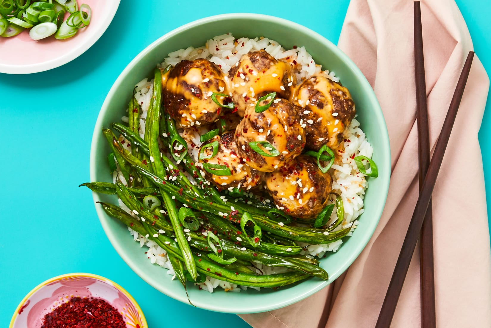

Firecracker Meatball Recipe

Description
This recipe is here to blow up everything you think you know about meatballs.
All dramatics aside, these meatballs are truly game-changing thanks to a certain onomatopoeic sauce.
What exactly is “firecracker,” you ask? Well, mystery asker, it’s a creamy, spicy, sweet, and savory (yes, all those things!)
sauce so good, it’ll make your taste buds explode!
Once the meatballs are baked, they’re tossed in the magical condiment, then plated atop sesame-seed-flecked rice along with crispy roasted green beans
(AKA more things to dip in sauce).
Ingredients
- 2 scallions
- 1 thumb ginger
- 2 tablespoon mayonnaise
- 2 tablespoon sour cream
- 2 teaspoon honey
- 2 tablespoon soy sauce
- 1 teaspoon sriracha
- 1 tablespoon sesame seeds
- 1/2 cup jasmine riace
- 10 ounce
- 1/4 cup panko breadcrumbs
- 6 ounce green beans
- 1 teaspoon korean chili flakes
Steps
- Adjust rack to top position (top and middle positions for 4 servings) and preheat oven to 425 degrees.
Wash and dry all produce.
Trim and thinly slice scallions, separating whites from greens; mince whites.
Peel and mince ginger.
- In a large bowl, combine mayonnaise, sour cream, honey, 2 tsp soy sauce (4 tsp for 4 servings; you’ll use the rest later),
and sriracha to taste.
Set aside.
- Heat a drizzle of oil in a small pot over medium-high heat.
Add half the sesame seeds (save the rest for serving); cook, stirring, until golden brown, 1-2 minutes.
Add rice, ¾ cup water (1½ cups for 4 servings), and a big pinch of salt.
Bring to a boil, then cover and reduce to a low simmer.
Cook until rice is tender, 15-18 minutes.
Keep covered off heat until ready to serve.
- While rice cooks, in a second large bowl, combine beef, panko, ginger, scallion whites, remaining soy sauce, salt (we used ½ tsp; 1 tsp for 4 servings), and pepper.
Form into 10-12 (20-24 for 4)1½-inch meatballs.
- Place meatballs on one side of a lightly oiled baking sheet.
On empty side, toss green beans with a drizzle of oil, salt, and pepper.
Roast on top rack until meatballs are cooked through and green beans are browned and tender, 14-16 minutes.
(For 4 servings, divide between 2 sheets; roast meatballs on middle rack and green beans on top rack.)
- Fluff rice with a fork; season with salt and pepper.
Divide between bowls or plates. Carefully add meatballs to bowl with sauce; toss to coat.
Top rice with meatballs and drizzle with any remaining sauce.
Serve green beans to the side.
Garnish with scallion greens, remaining sesame seeds, and chili flakes to taste.